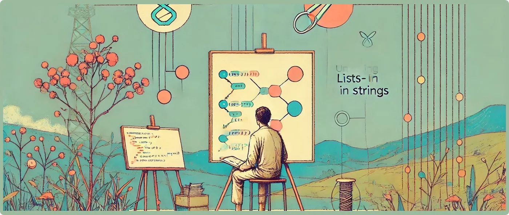

Unlocking the Power of Lists-in-Strings with Softanza
It’s a calm day in the development lab, and you’re faced with an intriguing problem: you need to work with lists hosted inside strings. Maybe you’re designing a code generator, parsing user input, or crafting an interactive tool where lists are passed around as strings.
par Mansour Ayouni · dans le dépôt depuis le 2024-12-06 · essai de fonction · domaine Collections et objets
Cet article est écrit en anglais, comme la bibliothèque.

Fear not! Softanza is here, with its robust stzString utilities. Let’s dive into a hands-on exploration of this amazing feature, step by step.
First, let's load the library:
load "stzlib.ring"
illustration
Step 1: Is It a List in a String?
You start with a string that looks suspiciously like a list. Is it really a list? Let Softanza figure that out for you:
? StzStringQ('[1,2,3]').IsListInString() #--> TRUE
? StzStringQ('1:3').IsListInString() #--> TRUE
? StzStringQ(' "A":"C" ').IsListInString() #--> TRUE
? StzStringQ(' "ا":"ج" ').IsListInString() #--> TRUEexécuté le 2026-10-08 20:43 au commit 4a184e6f0 : a tenu sa promesse
Softanza isn’t just smart—it’s multilingual! It can recognize lists using standard syntax like [1,2,3], short syntax like 1:3, and even Unicode-based ranges such as "ا":"ج".
“Great,” you think, “but I wonder how these lists are structured?”
NOTE 1: The
QinStzStringQ(str)simplifies creating anstzStringobject by eliminating the need for explicit instantiation. Instead of writingoStr = new stzString(str), you can achieve the same result more concisely withQ(str).NOTE 2: We would be able to use
Q(str)directly and get the same result. But, usingStzStringQ(str)enforces the intent to handle the input as a string, reducing ambiguity in cases like"[1, 2, 3]", which could be misinterpreted as a list rather than a string representing a list.
Step 2: Normal or Short Form?
With a glance, Softanza tells you if the list is in normal or short form:
? StzStringQ('[1,2,3]').IsListInNormalForm() #--> TRUE
? StzStringQ('1:3').IsListInShortForm() #--> TRUE
? StzStringQ(' "A":"C" ').IsListInShortForm() #--> TRUE
? StzStringQ(' "ا":"ج" ').IsListInShortForm() #--> TRUEexécuté le 2026-10-08 20:43 au commit 4a184e6f0 : a tenu sa promesse
Now, you know whether you're dealing with a detailed list or a compact range. This is perfect for applications where the syntax style matters!
Step 3: Are the Elements Contiguous?
Let’s check if the elements form a contiguous range (either numeric or character-based). A simple call does the trick:
? StzStringQ('[1,3]').IsContiguousListInString() #--> FALSE
? StzStringQ('1:3').IsContiguousListInString() #--> TRUE
? StzStringQ(' "A":"C" ').IsContiguousListInString() #--> TRUE
? StzStringQ(' "ا":"ج" ').IsContiguousListInString() #--> TRUEexécuté le 2026-10-08 20:43 au commit 4a184e6f0 : a tenu sa promesse
Softanza even considers the Unicode ordering of characters when determining contiguity. For example, "ا" to "ج" is contiguous in Arabic script.
Step 4: Transforming Forms
Sometimes, you need to switch between forms. Softanza makes this effortless with ToListInShortForm() and ToListInNormalForm():
? @@( StzStringQ('[1,2,3]').ToListInShortForm() ) #--> "1 : 3"
? @@( StzStringQ('1:3').ToListInNormalForm() ) #--> "[1, 2, 3]"
? StzStringQ(' ["A","B","C","D"] ').ToListInShortForm() #--> "A" : "D"
? StzStringQ(' "ا":"ج" ').ToListInShortForm() #--> "ا" : "ج"exécuté le 2026-10-08 20:43 au commit 4a184e6f0 : a tenu sa promesse
Whether you're debugging, formatting data, or preparing a string for transmission, these transformations simplify the process.
Step 5: Evaluating Lists at Runtime
Finally, when you're ready to convert the string back to a vibrant Haro list for further computation, just call ToList():
? StzStringQ('1:3').ToList() #--> [1, 2, 3]
? StzStringQ(' "A":"C" ').ToList() #--> ["A", "B", "C"]
? StzStringQ(' "ا":"ج" ').ToList() #--> ["ا", "ب", "ة", "ت", "ث", "ج"]exécuté le 2026-10-08 20:43 au commit 4a184e6f0 : a tenu sa promesse
This is where the magic happens. A list-in-string becomes a living, breathing Haro list, ready for loops, computations, or any operation you desire.
Step 6: Bonus – The Shortform Shortcut
If you’re a fan of compact syntax, Softanza offers a sleek shortcut: ToListInStringSF():
? @@( StzStringQ('[1,2,3]').ToListInStringSF() ) #--> "1 : 3"
? StzStringQ(' ["A","B","C","D"] ').ToListInStringSF() #--> "A" : "D"
? StzStringQ(' [ "ا", "ب", "ة", "ت" ] ').ToListInStringSF()+ NL #--> "ا" : "ت"exécuté le 2026-10-08 20:43 au commit 4a184e6f0 : a tenu sa promesse
This feature is perfect for quick conversions without sacrificing clarity.
Step 7: Bonus – The Magic of Q()
Tired of typing StzStringQ() every time? Softanza introduces the Q() function, a concise utility that elevates your data to the appropriate Softanza object. For our case, it conveniently wraps your string into an stzString object:
? Q('[1,2,3]').IsListInString() #--> TRUE
? Q('1:3').ToListInString() #--> [1, 2, 3]
? Q(' "ا":"ج" ').ToListInShortForm() #--> "ا" : "ج"
? Q(' "A":"C" ').IsContiguousListInShortForm() #--> TRUEexécuté le 2026-10-08 20:43 au commit 4a184e6f0 : a tenu sa promesse
With Q(), your workflow becomes smoother and more natural. It’s like a universal adapter that streamlines the process, letting you focus on what matters—building great software!
Final Thoughts
With these tools, Softanza equips you to:
- Analyze strings for list content.
- Distinguish between list forms and structures.
- Transform and evaluate lists seamlessly.
- Simplify your coding experience with Q().
Whether you’re parsing, debugging, or creating innovative tools, Softanza's StzString utilities (and the Q() function!) open up a world of possibilities. So, go ahead—unleash the power of lists-in-strings and let your creativity soar!
Citer
Mansour Ayouni. « Unlocking the Power of Lists-in-Strings with Softanza ». Softanza narrations, 2024. https://mayouni.github.io/stzsite/fr/narrations/stzlist-in-strings-narration.html
Exécuté au nom de Haro le 2026-10-08 20:43 dans la bibliothèque au commit 4a184e6f0, bloc après bloc dans un seul processus : 7 bloc(s) sur 8 ont tenu leur promesse ; les autres sont des illustrations. Le code des articles est du code Haro. Là où un article a été écrit avant que la langue prenne son nom actuel, le nom a été changé et rien d'autre. Genre, domaine et série lus dans le nom du fichier, année tirée du premier commit : dérivés, jusqu'à ce que l'article porte son propre en-tête. Le fichier sur GitHub(s'ouvre dans un nouvel onglet)